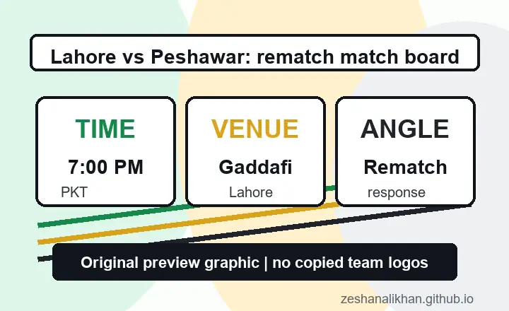

Rematch story is strong
Zalmi already beat Lahore by 76 runs this season, which gives the second meeting a clean and credible preview hook.
Lahore Qalandars and Peshawar Zalmi meet at Gaddafi Stadium, Lahore, on Saturday, April 25, 2026. The official HBL PSL match center lists a 7:00 PM PKT start, and the best angle is clear: this is the rematch after Zalmi beat Lahore by 76 runs on April 11, 2026.
This is one of the better PSL fixture pages to build because it combines strong fan demand with a very clear same-season rematch story. Users are not only checking the time. They also want to know whether Lahore can answer after being hit hard in the first meeting.
My first read is that Lahore need this game to feel different immediately. At home, the Qalandars cannot let Zalmi settle into the same pattern that worked on April 11. Peshawar, meanwhile, carry the cleaner confidence because they already know one version of the matchup that produced a one-sided result.

Zalmi already beat Lahore by 76 runs this season, which gives the second meeting a clean and credible preview hook.
The rematch moves to Gaddafi Stadium, so Lahore have the cleaner home-response narrative.
The 7:00 PM Pakistan time start makes this a stronger search fixture than a quieter afternoon slot.
Lahore Qalandars vs Peshawar Zalmi is listed as HBL PSL 11 Match 38 at Gaddafi Stadium, Lahore, with a 7:00 PM PKT start on Saturday, April 25, 2026.